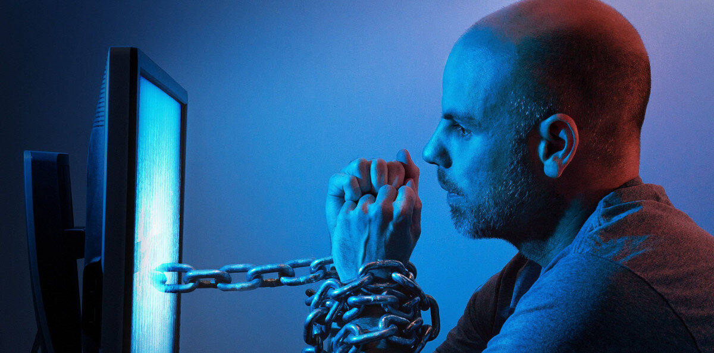

Вот самые распространенные технологические зависимости: Социальные сети и мессенджеры: социальные сети уменьшают время, которое мы проводим в реальном мире. А еще привыкаем к постоянному обновлению новостей и сообщений. Смартфоны и планшеты: смартфоны и планшеты могут стать привычным способом общения с миром, и люди могут стать зависимыми от постоянной проверки уведомлений! Игры и онлайн-развлечения: игры и онлайн-развлечения могут стать зависимостью, особенно в случаях, когда люди проводят слишком много времени в виртуальном мире вместо реальной жизни. Интернет-шопинг и онлайн-покупки: люди могут стать зависимыми от онлайн-шопинга, особенно если они используют его для удовлетворения эмоциональных потребностей. Онлайн-видео и потоковые сервисы: слишком много времени на YouTube и Twitch - тоже зависимость, которая может привести к потере времени и уменьшению интереса к реальному миру. Умные устройства для дома: люди могут стать зависимыми от использования умных устройств для дома (например, голосовые помощники), что может привести к уменьшению навыков коммуникации и потере способности принимать решения. Технологии виртуальной и дополненной реальности: виртуальные очки могут привести к уменьшению интереса к реальному миру и потере навыков коммуникации, если проводить в виртуальном мире больше времени, чем в реальном.
Установить лимиты на время, проведенное в Интернете и на использование устройств. Разнообразить свои интересы и занятия, чтобы не ограничиваться только использованием технологий. Искать новые способы общения с окружающим миром, в том числе с людьми, чтобы уменьшить зависимость от социальных сетей и мессенджеров. Регулярные перерывы и отключение смартфона, чтобы не утомлять глаза и разум. Планирование времени без использования технологий, чтобы расслабиться и отдохнуть. Старайтесь быть более осознанными в отношении использования технологий, и задавайте себе вопросы, когда чувствуете, что становитесь слишком зависимыми.
